윤리경영 추진방향
열린경영
정밀 안전진단
특화된 전문기술인력 및 첨단계측장비를 활용하여 국내 및 해외전기설비의 정밀안전진단, 시운전, 트러블슈팅을 비롯하여 해양플랜트 전기설비까지 다양한 분야에서 최상의 서비스를 제공하고 있습니다.
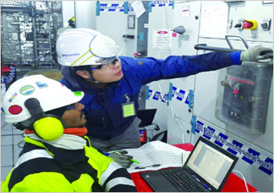
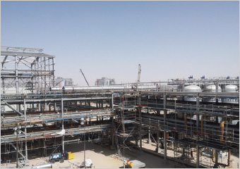
주요업무
- 첨단장비를 활용한 정밀안전진단
- 전문 프로그램을 활용한 최적의 전력계통 구성
- 전기설비의 사고원인분석, 기술검토 및 자문
- 해외·해양 전기설비에 대한 준공시험 및 진단업무
수행근거
- 엔지니어링산업 진흥법 제21조 사업자 신고
- 정관 제4조의 제10호(전기설비에 대한 설계감리 및 안전진단)
보유면허&자격
- 엔지니어링 사업자(전기설비, 산업안전)
- 전문설계업 1종
- 전문설계업 1종
- 종합감리업 1종
- 설계감리업
- 품질·환경경영시스템(ISO9001, 14001) 인증
- 안전보건경영시스템(OHSAS 18001) 인증
진단항목
-
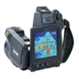적외선열화상 진단 활선상태에서 전기설비의 온도를 영상으로 출력하여 이상 발열 위치를 탐지
-
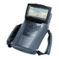자외선 코로나 진단 초고압, 특고압 전기설비에서 발생하는 코로나, 아크, 부분방전 등의 이상 현상을 화상으로 검출
-
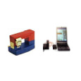HF 부분방전 진단 운전 중인 전기설비에서 각종 결함에 의한 방전 상태를 진단
-
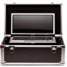UHF 부분방전 진단 UHF대역(0.5GHz~20GHz)의 초고주파 신호를 검출하여 전원주파수와 동기화시켜 부분방전 유무를 판별
-
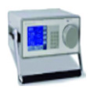SF 가스 성분 분석 GIS 설비에 충진되어 있는 SF 가스의 수분함유량 및 SO 유무를 측정하여 가스 절연 성능 및 GIS 내부 불량을 판단
-
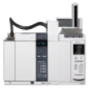절연유 유중가스 분석 유입기기의 절연유를 분석하여 유중가스 발생량에 따라 이상 유무를 판별
-
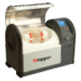전기절연유 시험 유입변압기 등에 사용하는 전기절연유를 시험하여 절연유의 열화정도 및 기능저하 여부를 판별
-
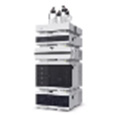절연유 퓨란화합물 분석 퓨란(Furan, C4H40)은 셀룰로오즈가 주성분인 변압기 내부의 절연지가 시간이 지남에 따라 분해되어 나오는 무색의 휘발성 유기화합물로 그 농도를 분석하여 변압기의 열화 정도를 진단
-
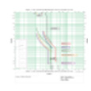전력계통 분석 전력계통 설비에 대하여 사고 파급 및 정전 피해를 최소화 할 수 있는 최적의 설비 구성 및 운영 방안을 제시
-
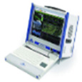전원품질 분석 활선 상태에서 전류, 전압, probe를 간단히 연결하여 전원의 품질을 측정
-
 AC 절연 진단 상용주파 교류전압을 인가하여 절연물을 흡습, 오손 및 Void(공극)에 의해 발생하는 유전손을 측정·분석하여 절연물의 열화상태 진단
AC 절연 진단 상용주파 교류전압을 인가하여 절연물을 흡습, 오손 및 Void(공극)에 의해 발생하는 유전손을 측정·분석하여 절연물의 열화상태 진단 -
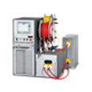VLF 진단 Very Low Frequency의 약자로 0.01~0.1Hz의 정현파 전압을 인가하여 절연내력, 유전정접(Tan ), 부분방전(PD)을 진단
-
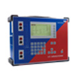변류기 진단 변류기 1차측, 2차측에 전압 전류를 인가하여 특성비, 극성 등 시험
-
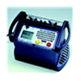차단기 진단 - 차단기의 개폐특성 분석 및 성능진단
- 차단기의 기계적 부품 등의 마모여부 등을 확인 -
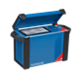변압기 진단 변압기의 성능진단을 한 개의 진단 장비 세트로 총 3가지 정밀 시험이 가능
-
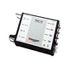변압기 주파수 응답 분석(SFRA) 변압기의 단선, 기계적 스트레스 및 운송에 의한 권선의 이동 또는 기계적인 결함을 검출
-
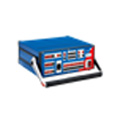보호계전기 시험 보호계전기 이상 유무를 판단하기 위하여 최소동작시험, 비율특성, 동작시간 특성, 차단기와 연동하여 시험
-
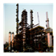발전설비 및 수·변전설비 보호계통 진단 전력설비의 설치, 보수, 정비 시 보호계전기를 비롯한 관련 보호시스템이 설계도서에 적합하게 시설되었는지의 여부를 정밀하게 시험
-
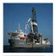해양 플랜트설비 준공 시험 조선소에서 건조하고 해양 석유시추, 정제, 저장, 하역 등의 해양플랜트 전기설비 준공시험 업무
-
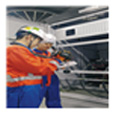해외 플랜트설비 진단 건설사에서 시공하고 해외플랜트의 Pre-Com, Commissioning Test(현장설치시험), Trouble Shooting 등 수행
-
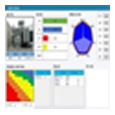CBRM 기반 대용량 전력설비 진단 각종 전기설비의 노후도, 관리방법, 진단 Data 등을 지수화 하여 건전도 및 수명을 예측
-
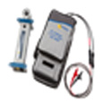태양광 발전설비 성능 진단 태양광 발전설비의 모듈 성능 및 전기적 출력을 분석하여 효율저하 요인을 발굴
- 담당부서 : 기획부
- 담당자 : 기획부
- 연락처 : 063-716-2071